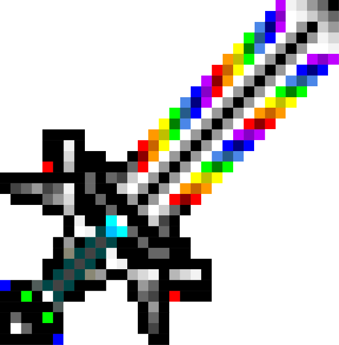

Redstone_GUY
Hello there. I see you have found my website.
I am Redstone_GUY. As the name sounds, I am pretty decent at Minecraft Redstone circuitry.
I am by no means anywhere as skilled as people like MattBatWings, Docm77, or SilentWhisperer, but I can do a bit of redstone.
As well as Minecraft, though, I enjoy playing n-gon, which is where the
majority of my skill in JavaScript comes from, and is also where a lot of my free time is spent modding.